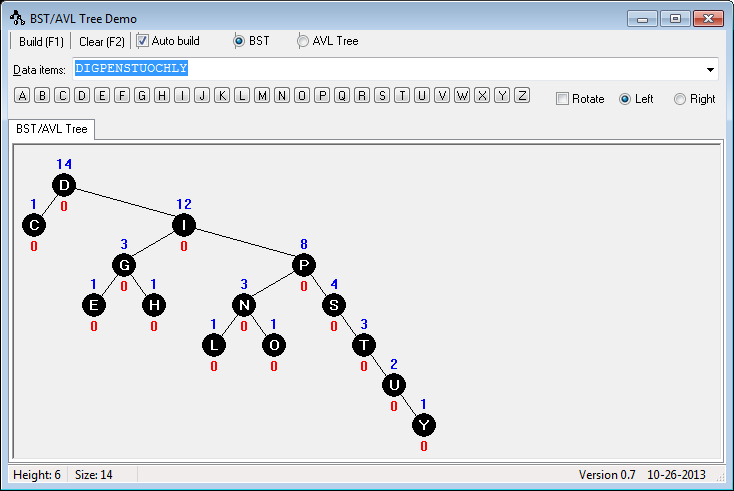
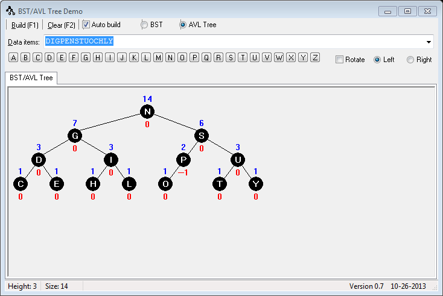
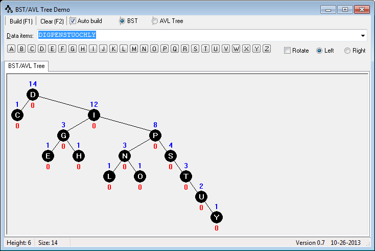
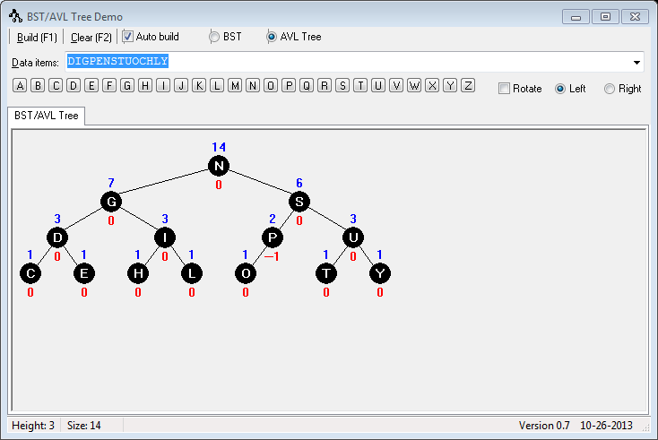
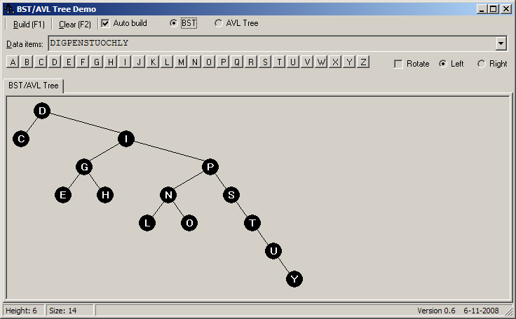
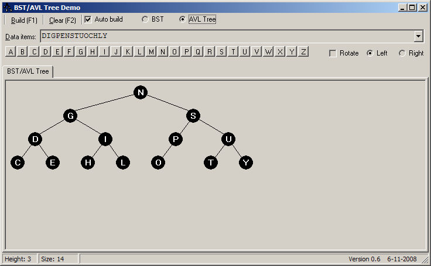

Information
If you can't get Clang to link on Windows, just compile the files:g++ -o gnu driver-sample.cpp ObjectAllocator.cpp PRNG.cpp -O -Wextra -Wall -std=c++11 -pedantic -Wconversion clang++ -o clan driver-sample.cpp ObjectAllocator.cpp PRNG.cpp -O -Wextra -Wall -std=c++11 -pedantic -Wconversion cl -Fems.exe driver-sample.cpp ObjectAllocator.cpp PRNG.cpp /EHa /W4 /WX /MTd /D_CRT_SECURE_NO_DEPRECATE
clang++ -c driver-sample.cpp ObjectAllocator.cpp PRNG.cpp -O -Wextra -Wall -std=c++11 -pedantic -Wconversion
g++ -o gnu driver-sample.cpp BSTree.cpp AVLTree.cpp ObjectAllocator.cpp PRNG.cpp -O -Wextra -Wall -std=c++11 -pedantic -Wconversion clang++ -o clan driver-sample.cpp BSTree.cpp AVLTree.cpp ObjectAllocator.cpp PRNG.cpp -O -Wextra -Wall -std=c++11 -pedantic -Wconversion cl -Fems.exe driver-sample.cpp BSTree.cpp AVLTree.cpp ObjectAllocator.cpp PRNG.cpp /EHa /W4 /WX /MTd /D_CRT_SECURE_NO_DEPRECATE
An Example SpellChecker
The program will accept 3 command line arguments:
Example:driver-spell [test_number] [dictionary] [show_tree]
This will run the second test with the dictionary allwords.txt and turn off the displaying of the tree. You can download a few sample dictionaries here. Here's an example running this:driver-spell 2 allwords.txt 0
Output:driver-spell 2 lexicon.txt 1
====================== TestSpellCheck1 ======================
type: AVLTree, height: 3, nodes: 12
MANGO
GRAPE PINEAPPLE
BANANA LEMON ORANGE STRAWBERRY
APPLE CHERRY KIWI LIME WATERMELON
Value LIME found with 4 compares
Value ORANGE found with 3 compares
Value WATERMELON found with 4 compares
Value FRUIT NOT found with 5 compares
====================== TestSpellCheck1 ======================
type: BSTree, height: 11, nodes: 12
APPLE
BANANA
CHERRY
GRAPE
KIWI
LEMON
LIME
MANGO
ORANGE
PINEAPPLE
STRAWBERRY
WATERMELON
Value LIME found with 7 compares
Value ORANGE found with 9 compares
Value WATERMELON found with 12 compares
Value FRUIT NOT found with 5 compares
Disclaimer: Please understand that the code to "draw" the text trees in the output is very simple and crude. Trying to display long strings or many strings will cause the program to crash. I'm not going to try and support printing hundreds or thousands (or more) of strings on the screen. It just won't work! But, for smaller dictionaries, it will try to print them in a readable fashion so you can see and debug your programs. Also, since I'm not really trying to create a working spellchecker, I'm forcing everything into UPPERCASE to keep it simple.
Other Techniques
template <typename T>
void BSTree<T>::insert(const T& value) throw(BSTException)
{
// Call a private recursive method
insert_item(root_, value);
}
template <typename T>
void AVLTree<T>::insert(const T& value) throw(BSTException)
{
// Create a stack to use with the private recursive method
std::stack<typename BSTree<T>::BinTree *> nodes;
insert_item(this->get_root(), value, nodes);
}
See Name lookup, templates, and accessing members of base classes for a refresher on this.insert_item(BSTree<T>::get_root(), value, nodes);
try
{
Node *mem = reinterpret_cast<BinTreeNode *>(objAllocator_->Allocate()); // Allocate memory for the object.
node = new (mem) BinTreeNode(value); // Construct the object in the memory.
}
catch (const OAException &e)
{
throw(BSTException(BSTException::E_NO_MEMORY, e.what()));
}
some_node->~BinTreeNode(); // Call the object's destructor. objAllocator_->Free(some_node); // Free the object's memory.
GUI Driver
No installation necessary. Just copy to your hard drive and run it. It's a work in progress, so it may not seem intuitive yet. You can just type in some letters in the box or click on a button (letter) to add it to the tree. If the letter exists, clicking on a button will remove it. If you want to rotate about the node, select the Rotate checkbox. It's still pretty old. One of these days I'll update it (like the one for Red-Black trees.)Download New and Improved! with counts and balance factors. The node count is in BLUE, above the node, and the balance factor is in RED, below the node. The balance factor only works with AVL trees, not BSTs.



